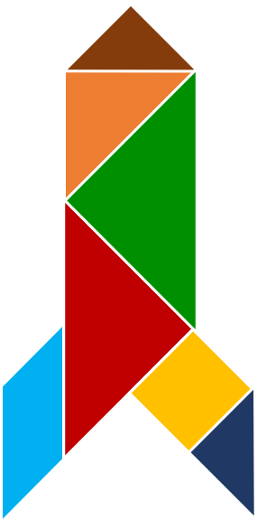
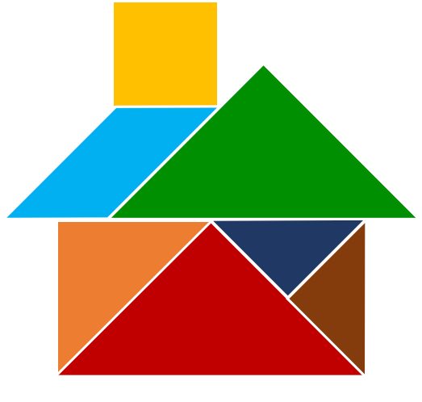

Excellence
A rocket because everything has to be right to fly to the moon
We operate with excellence. Excellence is not perfection, but doing the best you can with what you have. This means we aim high and do all we can with what we have to achieve our goals. We know that success is within reach when we press on and keep moving.
Integrity
A lampstand because it is a symbol for a beacon of light
We are authentic, trustworthy, and true. We say what we mean, and mean what we say; we hold ourselves to the highest principles to be the best we can be for our clients.
Versatility
A shuriken star because becoming a ninja requires agility and skill
Being creative demands that we are agile and adaptable in every situation. We take advantage of learning opportunities to be resourceful and become better at what we do.

Family
A house because home where family is
We are committed to family. Responsibility to our families is our foremost priority because we know that everything else falls into place when they are taken care of.
Service
A yacht because it takes a crew working together to sail and get there
We are stronger when we serve each other and work toward a common objective as a team. Our clients are our partners, and we endeavor to navigate through business together. Unity comes when we empower each other through respect, encouragement, and service.
Adventure
A jet because of the adventure of going somewhere
We explore new ideas and encourage innovation. We find the courage to forge new paths through thinking big, and discover approaches we never thought possible.
Gratitude
A ballerina because a grateful heart is a happy (and dancing) heart
We appreciate the contributions of those who trust us and push us to be greater than ourselves. As we operate from this place of humility, we realize that thankfulness and happiness will naturally follow.